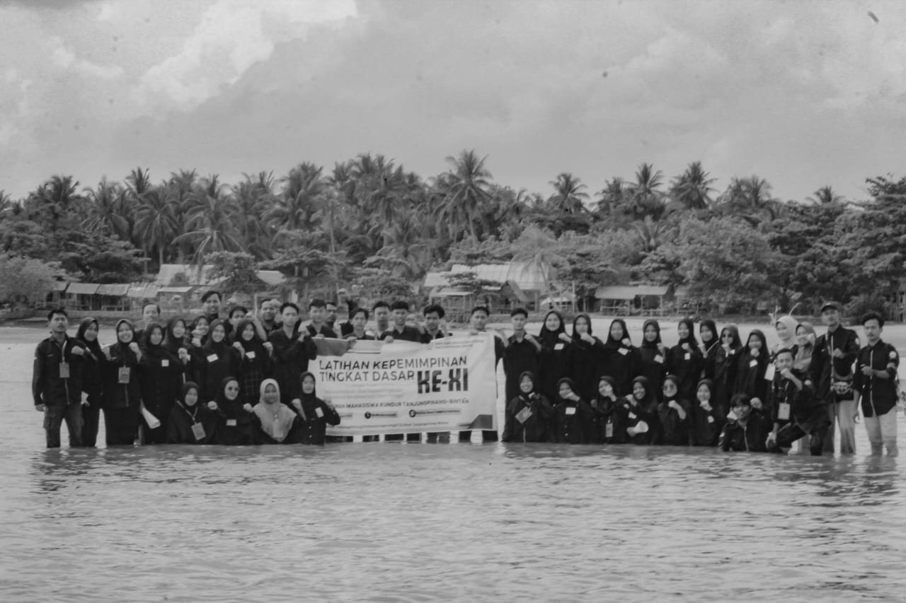

TEORI TRINGA JADI DASAR LATIHAN KEPEMIMPINAN HIMK
Pengantar Kegiatan
Toapaya Selatan - Himpunan Mahasiswa Kundur (HIMK) Tanjungpinang-Bintan mengadakan kegiatan Latihan Kepemimpinan (LK) tingkat 1 dengan tema "Menumbuhkan Jiwa Kepemimpinan Mahasiswa Berdasarkan Teori TRINGA." Kegiatan tersebut berlangsung selama 3 hari 2 malam, pada tanggal 23-25 Juni 2023 di Kantor Desa Toapaya Selatan, Kabupaten Bintan. Kegiatan ini juga dihadiri oleh demisioner-demisioner HIMK Kota Tanjungpinang-Bintan.
Tujuan Latihan Kepemimpinan
Latihan Kepemimpinan ini bertujuan untuk:
- Menumbuhkan jiwa kepemimpinan di setiap individu dan kelompok.
- Membentuk karakter dan kekritisan dalam mengambil keputusan.
- Melatih mental, loyalitas, solidaritas, dan rasa kekeluargaan.
Teori TRINGA
Teori TRINGA, yang dibuat oleh Ki Hajar Dewantara, menjadi dasar dalam latihan ini. TRINGA terdiri dari tiga poin:
- NGERTI (pengetahuan)
- NGRASA (pemahaman)
- NGELAKONI (melakukan)
Dalam latihan ini, anggota HIMK diajak untuk memahami apa yang tidak mereka ketahui, sadar akan ketidaktahuan mereka, dan berkomitmen untuk mempelajarinya. Ini bertujuan untuk mencapai pembentukan karakter yang sesuai dengan tujuan kegiatan.
Ucapan Terima Kasih dan Harapan
Hoirul Anam, ketua pelaksana, menyampaikan rasa terima kasihnya kepada seluruh peserta dan pihak yang terlibat.
"Saya mengucapkan ribuan terima kasih kepada seluruh peserta, pengurus, pimpinan, hingga demisioner yang berkesempatan hadir. Dalam momen ini, kita dapat saling mengenal dan menjalin silaturahmi yang lebih erat. Saya berharap kegiatan LK ini berjalan sesuai konsep yang telah kami rencanakan dan segala urusan dipermudahkan."
Agenda Tahunan
Ketua HIMK Tanjungpinang-Bintan, M. Teo Renaldi, menjelaskan bahwa Latihan Kepemimpinan tingkat-1 adalah agenda wajib tahunan HIMK.
"Latihan Kepemimpinan tingkat-1 ini merupakan agenda wajib tahunan HIMK. Latihan ini adalah usaha organisasi yang dilakukan secara terstruktur dan tersistematis, serta terus-menerus demi pembentukan dan pengembangan karakter anggota. LK 1 adalah tahapan awal bagi anggota HIMK untuk terdaftar sebagai Kader HIMK."
Motivasi dari Demisioner
Muslim Hamdi, selaku demisioner HIMK, turut hadir dan membuka kegiatan. Ia memberikan motivasi kepada anggota HIMK untuk menjaga silaturahmi antar sesama angkatan.
"LK ini bukan hanya sebagai ajang pengkaderan tetapi juga sebagai pembentuk karakter agar kedepannya bisa membawa dan memimpin diri sendiri."
Penulis: Dorri Ridowinaldy